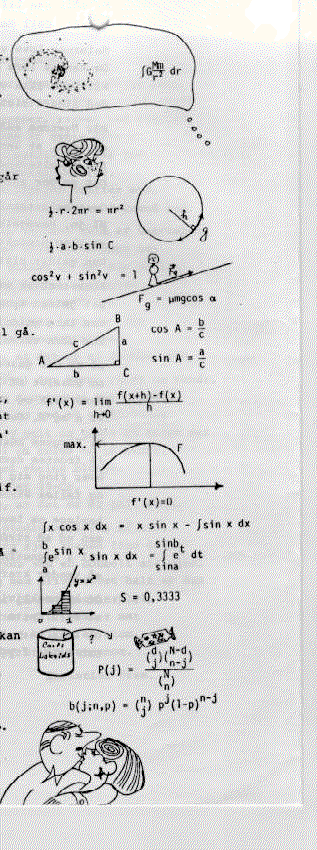

Mens sol og måne på himlen går
Melodi: du danske sommer …

Mens sol og måne på himlen går
og stjernevrimlen for livet rår.
Vi grubler venner på mat'matik
og elsker hjernernes gymnastik.
Tænk, tænk, tænk
kun sidenhen på din skolebænk.
Af huskeregler vi nævne må:
til cirklens omkreds to piger går
og arealet ½ h g,
er mål for trekanter alle ved.
Mål, mål, mål
med appelsiner din gummisål.
For idioter er trigono-
metrien ikke, men andre jo;
blot cos og sinus du husker på
hvis det på skråplanet vel skal gå.
Cos, cos, cos
husk
os
i c
os
og katenten h
os
.
For mat'matikken du har talent,
når du din differentialkvotient
behersker fuldendt og finde ka'
f mærkes rødder og maksima.
Diff. diff. diff.
v.h.a. Leibniz's og Newtons fif.
Når integraler dig kvaler gir
med delte integrationerier
og substitutter med grænser på
lad datamaten blot summen få.
Mat, mat, mat
Eksakte facits er bare pjat!
Sandsynligheder lidt krukket kan
på chokolader det komme an.
Men husk, at spørge i tide om
tilbagegives hvorfra de kom?
Stop, stop, stop
og hold modellen mod livet op.
Carl Hemmingsen